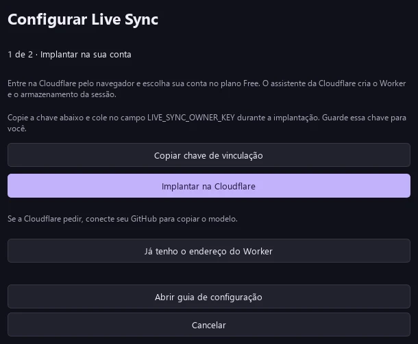
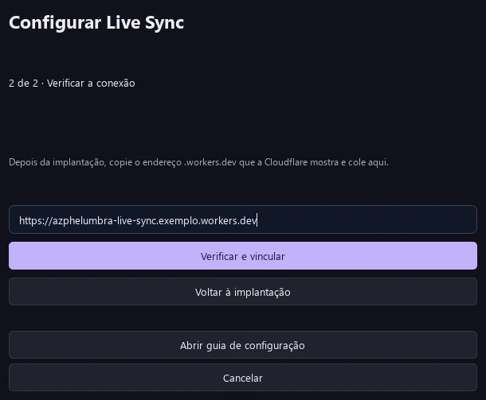

← Guia do Azphelumbra
Live Sync no Azphelumbra
Compartilhe os pins, anéis e desenhos táticos de Lower Reshanta no mapa e no minimapa do AION 2. O caller publica cada versão pelo Siege Command. Os jogadores recebem a estratégia com um convite.
Use uma versão do Azphelumbra que mostre Live Sync no Siege Command.
Configuração rápida para callers
- Abra Siege Command, selecione Live Sync e escolha Hospedar sessão (Caller).
- Clique em Configurar Cloudflare. O assistente gera uma chave de vinculação e abre a implantação na Cloudflare.
- Quando a Cloudflare terminar, cole no assistente o endereço
.workers.dev e clique em Verificar e vincular.
- Clique em Criar sessão e depois em Copiar convite. Compartilhe o convite com o grupo.
- Edite os pins e os desenhos nas abas do Siege Command. Volte ao Live Sync e clique em Publicar alterações quando o plano estiver pronto. A versão publicada e a quantidade de jogadores conectados aparecem no painel.
Guia ilustrado de implantação
1. Copie a chave e abra a implantação
Se você ainda não tem conta, crie uma conta Cloudflare, confirme seu e-mail e fique no plano Free. No Azphelumbra, clique em Copiar chave de vinculação e em Implantar na Cloudflare. Entre na Cloudflare pelo navegador e selecione sua conta.
A Cloudflare pode pedir autorização para copiar o modelo a um repositório e conectar a integração Workers Builds. Confira a conta, o repositório e as permissões exibidas na tela. Quando houver a opção, limite o acesso da integração ao repositório da implantação.

Na tela da Cloudflare, cole a chave no campo LIVE_SYNC_OWNER_KEY. Confirme a implantação. O modelo inclui o Worker, o Durable Object e o armazenamento SQLite necessários à sessão. Mantenha o assistente do Azphelumbra aberto enquanto a Cloudflare prepara a infraestrutura. Como funciona o Deploy to Cloudflare.
2. Verifique a conexão
Quando o Worker estiver implantado, copie o endereço público HTTPS mostrado pela Cloudflare. Cole o endereço que termina em .workers.dev e clique em Verificar e vincular. O Azphelumbra verifica o Worker, a chave, o armazenamento e a conexão de sincronização. Quando o painel indicar Cloudflare pronta para hospedar, você já pode criar a sessão.

Se o Worker já estiver implantado em sua conta, use Já tenho o endereço do Worker e informe a chave configurada na implantação anterior. Compartilhe apenas o convite com os jogadores. Guarde a chave de vinculação para você.
Entrada em sessões para jogadores
- Abra Siege Command → Live Sync → Participar de sessão (Jogador).
- Cole o convite inteiro que o caller enviou e clique em Entrar na sessão. Uma conta Cloudflare é necessária apenas para o caller.
- Para ver o plano no mapa e no minimapa do jogo, ative Overlay de Reshanta e entre em Lower Reshanta. Se precisar, use Selecionar minimapa para configurar a área que o app acompanha.
- Abra o mapa do jogo com M para ver a estratégia no mapa grande. O aplicativo acompanha cada nova publicação.
- Use Sair da sessão para voltar aos seus pins no overlay. Os presets pessoais ficam salvos no computador.
Use Encerrar sessão no painel do caller para desconectar o grupo e descartar a estratégia publicada no Worker. O Atlas, o Siege Command local e os outros módulos continuam disponíveis offline.
Solução de problemas
- O endereço ainda não responde como Live Sync. Aguarde o término da implantação e copie o endereço HTTPS de produção do Worker. Se a Cloudflare criou apenas um projeto de exemplo ou a compilação falhou, veja o histórico de implantação no painel.
- Endereço inválido. Cole o endereço de produção terminado em
.workers.dev que aparece no painel do Worker.
- A implantação pede um plano ou permissão. Confira se a conta escolhida usa Workers Free e se seu perfil tem permissão para implantar Workers. O modelo usa Durable Objects com SQLite, compatíveis com o Free. Se aparecer uma oferta de upgrade, volte e confira o plano, a conta e o modelo selecionados.
- A chave está ausente ou é diferente. Confira
LIVE_SYNC_OWNER_KEY em Settings → Variables and Secrets no Worker. Se você perdeu a chave, abra uma nova configuração no Azphelumbra, copie a nova chave, atualize o segredo no Worker e vincule pelo endereço existente.
- O canal de sincronização está indisponível. Confira se a implantação terminou. Experimente outra conexão para verificar se a rede permite WebSockets seguros.
- Aguardando a primeira publicação. O caller precisa clicar em Publicar alterações. As edições locais ficam pendentes até esse clique.
- Reconectando. O app mantém a última estratégia recebida enquanto tenta reconectar. Ao recuperar a conexão, ele consulta a versão atual. Se o caller gerou um novo convite, peça esse convite para entrar de novo.
- Convite expirado ou sessão encerrada. Peça ao caller um convite de uma sessão ativa.
- A estratégia não aparece no jogo. Confira se a versão recebida é maior que zero, se você está em Lower Reshanta e se Overlay de Reshanta está ativo. O app reutiliza a região e a calibração do overlay atual.
- Limite temporário ou erro 1027 da Cloudflare. Aguarde e confira o uso da conta. Se o limite diário do Workers Free foi atingido, ele é renovado à meia-noite UTC.
Limites do plano Free
Na consulta de novembro de 2026, a Cloudflare documentava 100 mil solicitações de Workers por dia e 100 mil solicitações de Durable Objects por dia. A cota diária de duração dos Durable Objects era de 13 mil GB-s. Para SQLite, o plano incluía 5 milhões de linhas lidas e 100 mil linhas gravadas por dia, com 5 GB de armazenamento total. As cotas são da conta. Outros projetos na mesma conta podem consumir parte delas. Limites do Workers · Cotas de Durable Objects.
Como referência, uma publicação para 1.000 jogadores conectados pode gerar aproximadamente 1.000 downloads individuais, além de conexões, reconexões e pedidos de status. A capacidade efetiva depende do uso e do ambiente. O app limita cada estratégia a 512 KiB e encerra sessões após 12 horas.
Atualizar ou remover a infraestrutura
- Atualizar. Encerre as sessões abertas e aplique a versão recomendada do conteúdo de
backend/live-sync ao repositório criado pela Cloudflare. Confirme a nova implantação no painel. Preserve o nome do Worker, o segredo LIVE_SYNC_OWNER_KEY e as migrações anteriores para manter o endereço de vinculação.
- Revogar um convite. Clique em Gerar novo convite. O antigo perde o acesso e os jogadores conectados terão de entrar com o novo convite.
- Desvincular este computador. Clique em Encerrar sessão e depois Desconectar Cloudflare. A vinculação salva é removida do Windows.
- Remover o Worker. Encerre as sessões. No painel Cloudflare, abra Workers & Pages, selecione o Worker do Live Sync e use Settings → Delete. Confira se o recurso removido é o da sua sessão. Se quiser, desconecte a integração com o repositório criado para o modelo. Excluir a implantação interrompe os convites desse endereço. Configuração do Worker.
O Worker pertence à conta do caller. A senha da Cloudflare é usada na página oficial no navegador. O Azphelumbra guarda apenas a vinculação no Windows e os convites dão acesso de leitura à sessão.
Reporte problemas
Informe a versão do Azphelumbra, a versão do Windows, o sintoma, quantos participantes havia e como reproduzir. Remova chaves, tokens, convites privados e dados pessoais antes de anexar logs ou capturas. GitHub Issues.
Live Sync in Azphelumbra
Share Lower Reshanta pins, flight rings, and tactical drawings on the AION 2 map and minimap. The caller publishes each revision from Siege Command. Players receive the strategy through an invite.
Use a version of Azphelumbra that shows Live Sync in Siege Command.
Quick setup for callers
- Open Siege Command, select Live Sync, and choose Host a session (Caller).
- Select Set up Cloudflare to generate a pairing key and start deployment in your browser.
- When Cloudflare finishes, paste the production
.workers.dev address into Azphelumbra and select Verify and link.
- Select Create session, then Copy invite, and share the invite with your group.
- Edit your markers and drawings in Siege Command. When the strategy is ready, return to Live Sync and select Publish changes. The panel shows the published version and how many players are connected.
Illustrated deployment guide
1. Copy the key and start deployment
If you need an account, sign up for Cloudflare, confirm your email, and stay on the Free plan. In Azphelumbra, select Copy pairing key, then Deploy to Cloudflare. Sign in through your browser and choose your own Cloudflare account.
Cloudflare may ask to copy the template to a repository and connect the Workers Builds integration. Check the account, repository, and permissions on screen. If offered a choice, give the integration access to the deployment repository only.
Paste the key into LIVE_SYNC_OWNER_KEY on Cloudflare and confirm the deployment. The template provisions the Worker and its SQLite-backed Durable Object. Keep the Azphelumbra setup window open while it deploys. How Deploy to Cloudflare works.
2. Verify the connection
Copy the production HTTPS address ending in .workers.dev. Paste it into Azphelumbra and select Verify and link. Azphelumbra checks the Worker, pairing key, storage, and synchronization connection. When the panel says Cloudflare is ready to host, you can create a session.
For an existing Worker in your account, select I already have the Worker address and enter the pairing key you used for that deployment. Keep that key private. Share only the session invite.
Joining as a player
- Open Siege Command → Live Sync → Join a session (Player).
- Paste the full invite and select Join session. Players can join without a Cloudflare account.
- Enable Reshanta overlay and enter Lower Reshanta to see the strategy in the game. Use Select minimap if you still need to set the minimap area.
- Press M to see the published strategy on the large map. The app receives new published versions automatically.
- Select Leave session to restore your own overlay markers. Personal presets stay on your computer.
The caller can select End session to disconnect the group and clear the published strategy from the Worker. The Atlas, local Siege Command, and other modules are available offline.
Troubleshooting
- Worker missing or deployment failed. Wait for deployment to finish. Open the build history in Cloudflare if the production address still does not respond.
- Invalid address. Copy the production Worker address ending in
.workers.dev from Cloudflare.
- Pairing failed. Check
LIVE_SYNC_OWNER_KEY under Settings → Variables and Secrets. If you lost the key, generate a new one in Azphelumbra, update the Worker secret, and link the existing address again.
- Cloudflare asks for a plan or permission. Check that the account uses Workers Free and your role can deploy Workers. The template uses SQLite-backed Durable Objects, which are available on Free. If you see an upgrade offer, check the selected account, plan, and template first.
- Invite expired or session ended. Ask the caller for a fresh invite to an active session.
- Waiting for the first publication. The caller must select Publish changes.
- Reconnecting. The last strategy remains visible. The app fetches the latest revision once it reconnects. If the caller rotated the invite, ask for the new one.
- Strategy missing in the game. Confirm that you received a version above zero, are in Lower Reshanta, and have enabled Reshanta overlay.
- Temporary limit or Cloudflare error 1027. Check account usage. The Workers Free daily limit resets at midnight UTC.
Free plan limits
In November 2026, Cloudflare documented 100,000 Workers requests and 100,000 Durable Objects requests per day. Durable Objects include 13,000 GB-s of daily duration. SQLite includes 5 million rows read per day, 100,000 rows written per day, and 5 GB of total storage. Other projects in the same account share those quotas. Workers limits · Durable Objects quotas.
A publication to 1,000 connected players can trigger roughly 1,000 snapshot downloads, in addition to connections and status requests. Actual capacity depends on how the service is used. Each strategy has a 512 KiB size limit, and sessions expire after 12 hours.
Updating or removing the Worker
- Update. End active sessions and update the Cloudflare-created repository with the recommended version of
backend/live-sync. Keep the Worker name, the LIVE_SYNC_OWNER_KEY secret, and previous migrations. Verify the new deployment in Cloudflare.
- Revoke an invite. Select Generate new invite. The old invite loses access, and connected players must rejoin with the new one.
- Unlink this computer. End your session and select Disconnect Cloudflare to remove the pairing from Windows.
- Remove the Worker. End active sessions, open Workers & Pages, select your Live Sync Worker, and use Settings → Delete. You can then disconnect the repository integration if desired. Invites to that address stop working. Worker deletion.
The caller owns the Worker and the published strategy resides in that account. Players connect directly to the caller's endpoint.
Report an issue
Include the Azphelumbra version, Windows version, symptom, approximate player count, and steps to reproduce. Remove keys, tokens, private invites, and personal data before attaching logs or screenshots. GitHub Issues.
Live Sync en Azphelumbra
Comparte pines, anillos de vuelo y dibujos tácticos de Lower Reshanta en el mapa y el minimapa de AION 2. El caller publica cada versión desde Siege Command. Los jugadores reciben la estrategia con una invitación.
Usa una versión de Azphelumbra que muestre Live Sync en Siege Command.
Configuración rápida para callers
- Abre Siege Command, selecciona Live Sync y elige Hospedar sesión (Caller).
- Selecciona Configurar Cloudflare para generar la clave de vinculación e iniciar la implementación en el navegador.
- Cuando Cloudflare termine, pega la dirección de producción
.workers.dev en Azphelumbra y selecciona Verificar y vincular.
- Selecciona Crear sesión y luego Copiar invitación. Comparte la invitación con el grupo.
- Edita las marcas y los dibujos en Siege Command. Cuando la estrategia esté lista, regresa a Live Sync y selecciona Publicar cambios. El panel indica la versión publicada y cuántos jugadores están conectados.
Guía ilustrada de implementación
1. Copia la clave e inicia la implementación
Si necesitas una cuenta, regístrate en Cloudflare, confirma tu correo y conserva el plan Free. En Azphelumbra, selecciona Copiar clave de vinculación y después Implementar en Cloudflare. Inicia sesión desde el navegador y selecciona tu cuenta de Cloudflare.
Cloudflare puede pedir permiso para copiar la plantilla a un repositorio y conectar la integración Workers Builds. Revisa la cuenta, el repositorio y los permisos que aparecen. Si tienes la opción, concede acceso únicamente al repositorio de esta implementación.
Pega la clave en LIVE_SYNC_OWNER_KEY en Cloudflare y confirma. La plantilla prepara el Worker y su Durable Object con SQLite. Mantén abierto el asistente de Azphelumbra mientras termina la implementación. Cómo funciona Deploy to Cloudflare.
2. Verifica la conexión
Copia la dirección HTTPS de producción que termina en .workers.dev. Pégala en Azphelumbra y selecciona Verificar y vincular. Azphelumbra verifica el Worker, la clave, el almacenamiento y la conexión de sincronización. Cuando aparezca Cloudflare está lista para hospedar sesiones, puedes crear una sesión.
Si ya tienes un Worker en tu cuenta, elige Ya tengo la dirección del Worker e ingresa la clave que usaste para esa implementación. Guarda esa clave para ti y comparte solo la invitación de la sesión.
Cómo unirse como jugador
- Abre Siege Command → Live Sync → Unirse a una sesión (Jugador).
- Pega la invitación completa y selecciona Unirse a la sesión. Los jugadores pueden entrar sin una cuenta de Cloudflare.
- Activa el overlay de Reshanta y entra a Lower Reshanta. Si falta configurar el área, usa Seleccionar minimapa.
- Presiona M para ver la estrategia publicada en el mapa grande. La aplicación recibe automáticamente las nuevas versiones.
- Selecciona Salir de la sesión para recuperar tus marcas en el overlay. Tus ajustes preestablecidos permanecen en tu computadora.
El caller puede seleccionar Finalizar sesión para desconectar al grupo y eliminar la estrategia publicada del Worker. El Atlas, Siege Command local y los demás módulos funcionan sin conexión.
Solución de problemas
- No se encuentra el Worker o falló la implementación. Espera a que termine. Si la dirección de producción sigue sin responder, revisa el historial de compilación en Cloudflare.
- Dirección no válida. Copia en Cloudflare la dirección de producción del Worker que termina en
.workers.dev.
- Falló la vinculación. Revisa
LIVE_SYNC_OWNER_KEY en Settings → Variables and Secrets. Si perdiste la clave, genera otra en Azphelumbra, actualiza el secreto en el Worker y vincula de nuevo la misma dirección.
- Cloudflare pide otro plan o permiso. Verifica que la cuenta use Workers Free y que tu perfil pueda implementar Workers. La plantilla usa Durable Objects con SQLite, disponibles en Free. Si aparece una oferta para subir de plan, revisa la cuenta, el plan y la plantilla.
- La invitación venció o la sesión finalizó. Pídele al caller una invitación a una sesión activa.
- Esperando la primera publicación. El caller debe seleccionar Publicar cambios.
- Reconectando. La última estrategia sigue visible. La aplicación busca la versión actual al reconectarse. Si el caller cambió la invitación, pídele la nueva.
- No veo la estrategia en el juego. Verifica que la versión recibida sea mayor que cero, que estés en Lower Reshanta y que el overlay de Reshanta esté activo.
- Límite temporal o error 1027 de Cloudflare. Consulta el consumo de la cuenta. El límite diario de Workers Free se renueva a medianoche UTC.
Límites del plan Free
En noviembre de 2026, Cloudflare documentaba 100.000 solicitudes de Workers y 100.000 solicitudes de Durable Objects por día. Durable Objects incluye 13.000 GB-s de duración diaria. SQLite incluye 5 millones de filas leídas por día, 100.000 filas escritas por día y 5 GB de almacenamiento total. Los demás proyectos de la cuenta comparten las cuotas. Límites de Workers · Cuotas de Durable Objects.
Una publicación para 1.000 jugadores conectados puede generar unas 1.000 descargas, además de conexiones y consultas de estado. La capacidad efectiva depende del uso de la cuenta. Cada estrategia admite hasta 512 KiB y las sesiones vencen después de 12 horas.
Actualizar o eliminar el Worker
- Actualizar. Finaliza las sesiones activas y actualiza el repositorio creado por Cloudflare con la versión recomendada de
backend/live-sync. Conserva el nombre del Worker, el secreto LIVE_SYNC_OWNER_KEY y las migraciones previas. Verifica la implementación en Cloudflare.
- Revocar una invitación. Selecciona Generar nueva invitación. La anterior pierde su acceso y los jugadores deben entrar con la nueva.
- Desvincular la computadora. Finaliza la sesión y selecciona Desconectar Cloudflare para quitar la vinculación de Windows.
- Eliminar el Worker. Finaliza las sesiones, abre Workers & Pages, selecciona el Worker de Live Sync y usa Settings → Delete. Después puedes desconectar la integración con el repositorio. Las invitaciones de esa dirección dejarán de funcionar. Cómo eliminar un Worker.
El caller es dueño del Worker y la estrategia publicada reside en su cuenta. Los jugadores se conectan directamente a la dirección del caller.
Reportar un problema
Incluye la versión de Azphelumbra, la versión de Windows, el síntoma, la cantidad aproximada de jugadores y los pasos para reproducirlo. Quita las claves, los tokens, las invitaciones privadas y los datos personales antes de adjuntar registros o capturas. GitHub Issues.